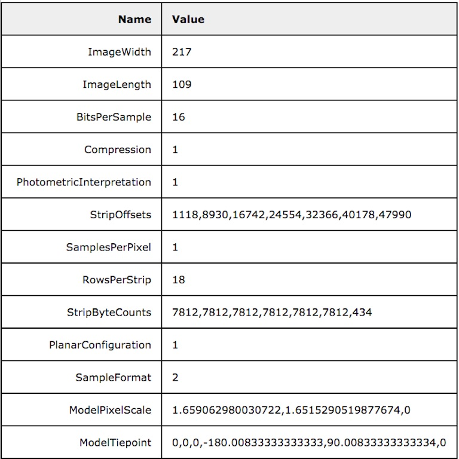
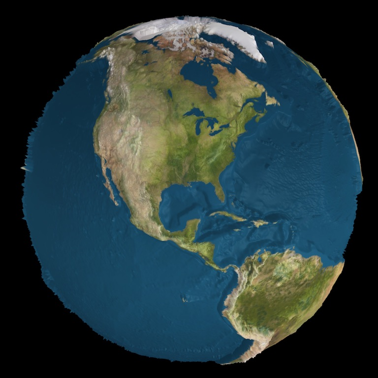
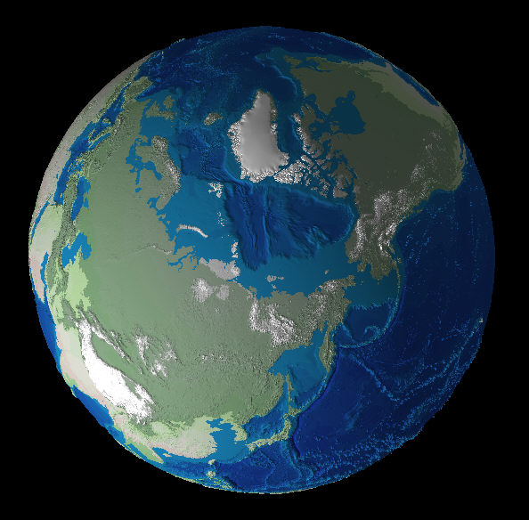

GeoTools
A sample of some of the tools created by Geo-F/X.
|  | TIFF Reader. A simple tool based on geotools.js that reads a GeoTIFF file and optionally creates an HTML table summarizing the info. |
|  | TIFFMapper. A relatively simple tool that reads a GeoTIFF file (via the TIFF Reader, above) and builds a #D model and optionally drapes it with an image. |
|  | A survey of geographics projections with examples from software written by Geo-F/X |